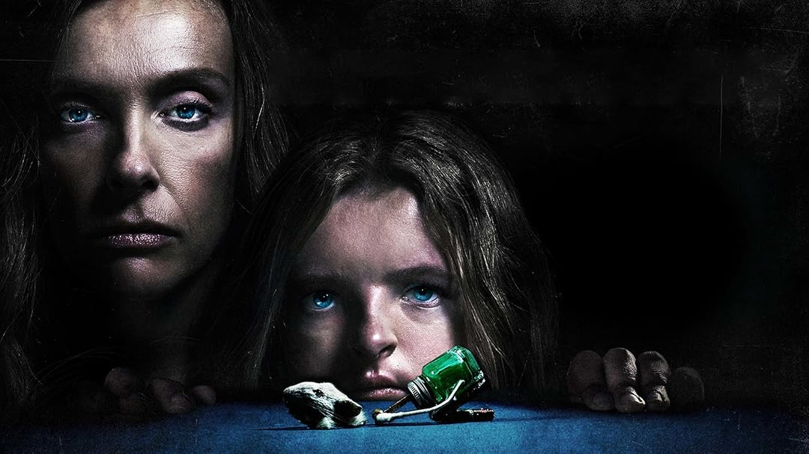

10 películas para ver solo/a (si te gusta sufrir)
No son solo de terror: son emocionalmente demoledoras. Una lista para quienes buscan sufrir... por gusto.

Introducción:
Estas películas no están hechas solo para asustarte: están diseñadas para incomodarte, romperte emocionalmente o dejarte sin palabras. Si te gusta el cine de terror, estas son las mejores recomendaciones.
La lista maldita:
- Martyrs (2008) – Francia. Dolor físico y existencial. Brutal.
- The Nightingale (2018) – Terror psicológico con fondo histórico. Cruda.
- Funny Games (1997 o 2007) – Sadismo realista e incómodo.
- The Lodge (2019) – Aislamiento, traumas y frío interno.
- The House That Jack Built (2018) – Arte, muerte y egolatría.
- Lake Mungo (2008) – Tristeza disfrazada de falso documental.
- Hereditary (2018) – Dolor familiar y horror sobrenatural.
- The Killing of a Sacred Deer (2017) – Ritmo lento, castigo divino.
- Come and See (1985) – Guerra como la peor pesadilla posible.
- Speak No Evil (2022) – Final aterrador. Moral incómoda. Te destruye.
Opinión final:
Estas películas no son para todos. Pero si disfrutás del cine que deja marcas, esta lista te va a acompañar... en tu soledad.